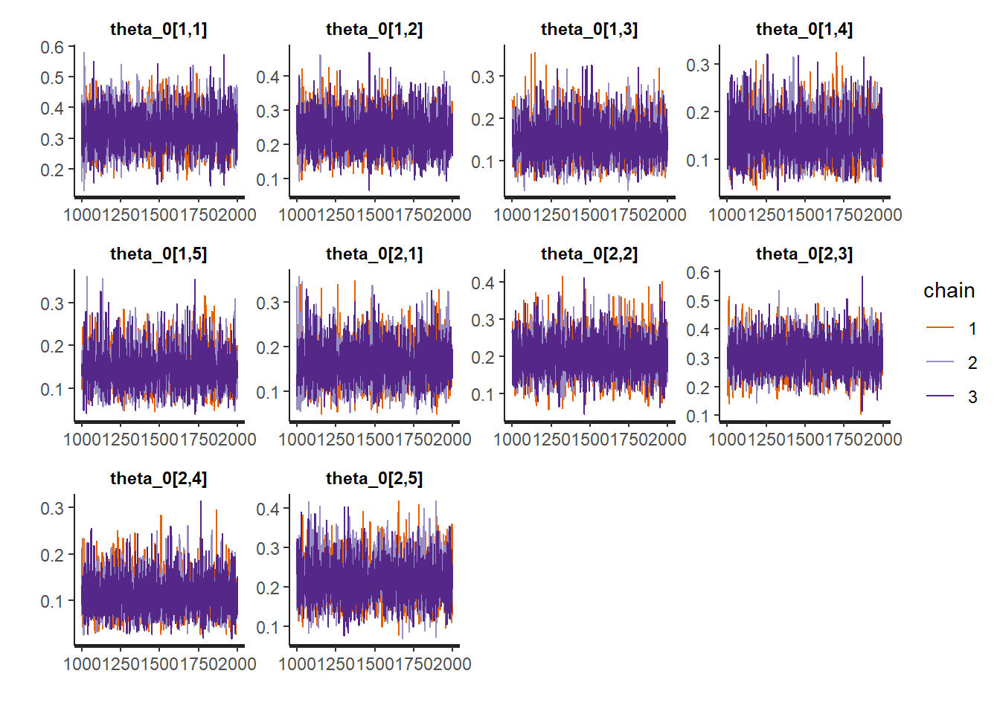
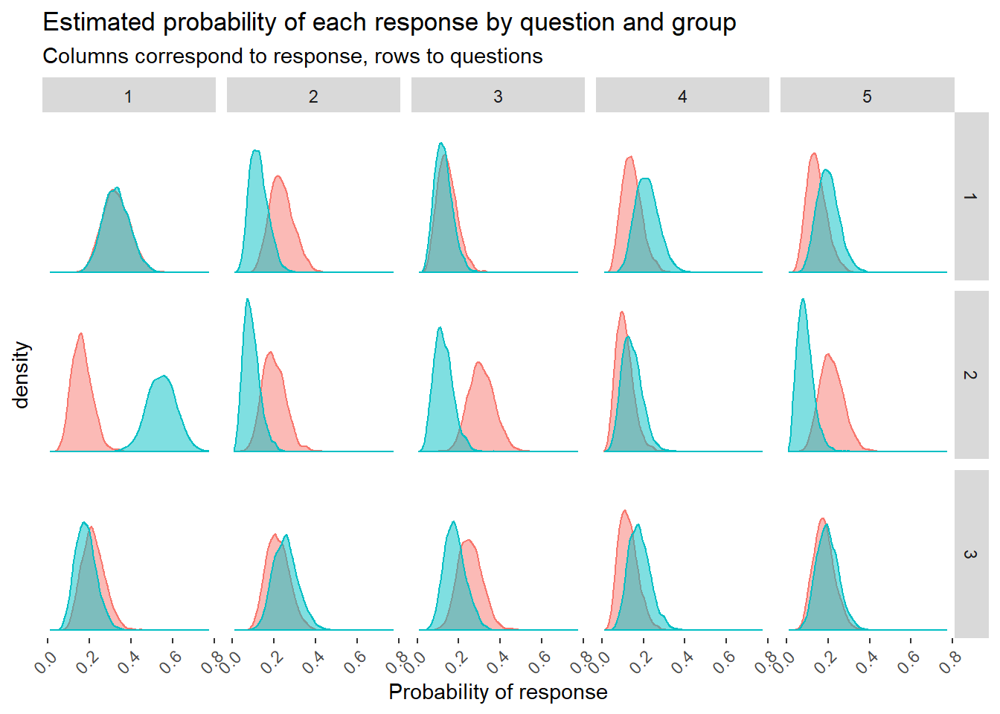

This post is adapted from Alex Hayes’ post available here. In it he reviews the ways one can use Stan to review the distribution of responses to categorical survey items and then use this to predict class probabilities. This is a neat way to look at survey items rather than converting responses to a numeric scale and treating them as continuous. Much more true to the data and a lot has been written about the dangers of using the continuous approach to catgorical data.
I do a good bit of survey analysis where often times we are trying to compare different response patterns of different groups. As such this provides an interesting way of seeing the distribution of answers across a variety of items.
\[R_{i,j}|theta_j \sim Categorical(\theta_j)\] \[\theta_j|y_i \sim Dirichlet(4)\] Where \(R_{i,j}\) is the response of the student ith to jth question with y representing class membership.
Additionaly, another important point for the prediction of class probability given predicted quantities we can use Bayes’ Rule:
\[P(yi = 0 | R_i,1,...,R_i,j)=\frac{\Pi_{j=1}^AP(R_{i,j}|y_i=0)}{\Pi_{j=1}^AP(R_{i,j}|y_i=0)+\Pi_{j=1}^AP(R_{i,j}|y_i=1)}\]
Or more simply put:
\[P(yi = 0 | R_i,1,...,R_i,j)=\frac{\Pi_{j=1}^A\theta_{j,0}}{Pi_{j=1}^A\theta_{j,0}+Pi_{j=1}^A\theta_{j,1}}\]
Luckily Alex wrote a Stan function which computes this probability for us and can be specified both as a function and then used in the generated quanitities block.
So now using
library(tidyverse)
set.seed(336)
Q <- 3 # Three Question (items)
A <- 5 # 5 Possible responses
alpha <- rep(4, A)
theta_0 <- gtools::rdirichlet(Q, alpha)
theta_1 <- gtools::rdirichlet(Q, alpha)sample_one <- function(theta) {
R <- numeric(Q)
for (q in 1:Q)
R[q] <- sample(1:A, 1, prob = theta[q, ])
names(R) <- paste0("q", 1:Q)
as.list(R)
}sample_n <- function(theta, n, id) {
samples <- map_dfr(1:n, ~sample_one(theta))
samples <- add_column(samples, y = id, .before = TRUE)
mutate_all(samples, as.integer)
}
(df <- sample_n(theta_0, 35, id = 0) %>%
bind_rows(sample_n(theta_1, 35, id = 1)))Additionally, we can add back in some data for prediction purposes, again predicting in our generated quantities block.
new_df <- sample_n(theta_0, 35, id = 0) %>%
bind_rows(sample_n(theta_1, 35, id = 1))library(rstan)
rstan_options(auto_write = TRUE)Based on our specified generative model we can write our Stan function
writeLines(readLines("stan_categorical_responses.stan"))// adapted from
functions {
/**
* class_prob
*
* Given an array of responses and probabilities for each response
* for class 0 and class 1, calculate the probability that each
* respondent is in class 0 via Bayes rule. In the training set,
* the actual class of respondent `i` is given by `y[i]`.
*
* We assume that responses to different questions are independent
* and that each class is equally likely. That is, we take
* P(y=1) = P(y=0) = 0.5, and thus these terms cancel.
*
* @param R A 2-array of integers, where each row corresponds to a
* a respondent, and each column corresponds to a question. Elements
* can be 1, 2, ..., A.
*
* @param theta_0 A 2-array of response probabilities for class 0.
* That is, `theta_0[q, r]` is the probability of (integer-valued)
* response `r` to question number `q`.
*
* @param theta_1 A 2-array of response probabilities for class 1.
*
* @return A vector of probabilities that each user is in class 0.
* This vector has the same number of elements as there are rows
* in R.
*/
// note the type signatures here!
vector class_prob(int[,] R, vector[] theta_0, vector[] theta_1) {
real p_0;
real p_1;
int N = dims(R)[1];
int Q = dims(R)[2];
vector[N] p;
for (i in 1:N) {
vector[Q] pr_0;
vector[Q] pr_1;
for (q in 1:Q) {
pr_0[q] = theta_0[q, R[i, q]];
pr_1[q] = theta_1[q, R[i, q]];
}
// take the product of probabilities across all questions
// since we assume responses to different questions are
// independent. work in log space for numerical stability
p_0 = exp(sum(log(pr_0)));
p_1 = exp(sum(log(pr_1)));
p[i] = p_0 / (p_0 + p_1);
}
return(p);
}
}
data {
int Q; // number of questions
int A; // number of possible answers to each question
int N; // number of respondents
int new_N; // number of unlabelled respondents
int<lower=1, upper=5> R[N, Q]; // responses to questions (train)
int<lower=1, upper=5> new_R[new_N, Q]; // responses to questions (test)
int<lower=0, upper=1> y[N]; // binary feature for user
vector<lower=0>[A] alpha; // dirichlet prior parameter
}
parameters {
// response probabilities for each question
simplex[A] theta_0[Q]; // for group 0
simplex[A] theta_1[Q]; // for group 1
}
model {
for (q in 1:Q) {
theta_0[q] ~ dirichlet(alpha);
theta_1[q] ~ dirichlet(alpha);
for (i in 1:N) {
if (y[i] == 0) {
R[i, q] ~ categorical(theta_0[q]);
}
if (y[i] == 1) {
R[i, q] ~ categorical(theta_1[q]);
}
}
}
}
generated quantities {
vector[N] pred = class_prob(R, theta_0, theta_1);
vector[new_N] new_pred = class_prob(new_R, theta_0, theta_1);
}As per normal we need to do a little reformating of our data, but this isn’t too crazy
new_data <- list(
R = as.matrix(dplyr::select(df, -y)),
N = nrow(df),
y = df$y,
new_R = as.matrix(dplyr::select(new_df, -y)),
new_N = nrow(new_df),
Q = Q,
A = A,
alpha = alpha
)model <- stan_model("stan_categorical_responses.stan")Now we can run the fit:
fit <- sampling(model, new_data, cores = 3, iter = 2000, chains = 3, refresh=0)Run our trace plots for diagnostics.
traceplot(fit)
Additionally, Michael Betancourt has assembled a few great utilities that can be used to diagnose a fit. Additionally, a neat trick learned from reading his blog is to souce specific functions into a local environment and then reference them explicitly.
util <- new.env()
source('stan_utilities.R', local=util)Let’s run the checks:
util$check_all_diagnostics(fit)## [1] "n_eff / iter looks reasonable for all parameters"
## [1] "Rhat looks reasonable for all parameters"
## [1] "0 of 3000 iterations ended with a divergence (0%)"
## [1] "0 of 3000 iterations saturated the maximum tree depth of 10 (0%)"
## [1] "E-FMI indicated no pathological behavior"Everything looks good! On to inferences.
library(bayesplot)
library(tidybayes)print(fit, pars = "theta_0")## Inference for Stan model: stan_categorical_responses.
## 3 chains, each with iter=2000; warmup=1000; thin=1;
## post-warmup draws per chain=1000, total post-warmup draws=3000.
##
## mean se_mean sd 2.5% 25% 50% 75% 98% n_eff Rhat
## theta_0[1,1] 0.33 0 0.07 0.21 0.28 0.32 0.37 0.46 6221 1
## theta_0[1,2] 0.24 0 0.06 0.14 0.19 0.23 0.27 0.36 6461 1
## theta_0[1,3] 0.15 0 0.05 0.07 0.11 0.14 0.18 0.25 5846 1
## theta_0[1,4] 0.14 0 0.05 0.06 0.11 0.14 0.17 0.25 6077 1
## theta_0[1,5] 0.15 0 0.05 0.07 0.11 0.14 0.18 0.25 6320 1
## theta_0[2,1] 0.16 0 0.05 0.08 0.13 0.16 0.19 0.26 6448 1
## theta_0[2,2] 0.20 0 0.05 0.10 0.16 0.19 0.24 0.31 6637 1
## theta_0[2,3] 0.31 0 0.06 0.20 0.27 0.31 0.35 0.43 6076 1
## theta_0[2,4] 0.11 0 0.04 0.04 0.08 0.10 0.13 0.20 6022 1
## theta_0[2,5] 0.22 0 0.06 0.12 0.18 0.21 0.26 0.34 5735 1
## theta_0[3,1] 0.22 0 0.06 0.12 0.18 0.21 0.25 0.33 7842 1
## theta_0[3,2] 0.22 0 0.06 0.12 0.18 0.21 0.25 0.33 7388 1
## theta_0[3,3] 0.25 0 0.06 0.15 0.21 0.25 0.29 0.38 7063 1
## theta_0[3,4] 0.13 0 0.05 0.05 0.09 0.12 0.16 0.23 6601 1
## theta_0[3,5] 0.18 0 0.05 0.09 0.15 0.18 0.21 0.29 7499 1
##
## Samples were drawn using NUTS(diag_e) at Thu Jun 20 10:32:56 2019.
## For each parameter, n_eff is a crude measure of effective sample size,
## and Rhat is the potential scale reduction factor on split chains (at
## convergence, Rhat=1).print(fit, pars = "theta_1")## Inference for Stan model: stan_categorical_responses.
## 3 chains, each with iter=2000; warmup=1000; thin=1;
## post-warmup draws per chain=1000, total post-warmup draws=3000.
##
## mean se_mean sd 2.5% 25% 50% 75% 98% n_eff Rhat
## theta_1[1,1] 0.33 0 0.06 0.21 0.28 0.33 0.37 0.46 6667 1
## theta_1[1,2] 0.13 0 0.04 0.06 0.09 0.12 0.15 0.22 7069 1
## theta_1[1,3] 0.13 0 0.04 0.05 0.10 0.12 0.15 0.22 4609 1
## theta_1[1,4] 0.22 0 0.06 0.12 0.18 0.22 0.25 0.34 6389 1
## theta_1[1,5] 0.20 0 0.05 0.11 0.16 0.20 0.23 0.31 8081 1
## theta_1[2,1] 0.55 0 0.07 0.41 0.50 0.55 0.59 0.68 7694 1
## theta_1[2,2] 0.09 0 0.04 0.03 0.06 0.09 0.11 0.18 5528 1
## theta_1[2,3] 0.13 0 0.05 0.05 0.09 0.12 0.16 0.23 6236 1
## theta_1[2,4] 0.15 0 0.05 0.06 0.11 0.14 0.18 0.25 5285 1
## theta_1[2,5] 0.09 0 0.04 0.03 0.06 0.09 0.11 0.18 6102 1
## theta_1[3,1] 0.18 0 0.05 0.09 0.15 0.18 0.21 0.29 6327 1
## theta_1[3,2] 0.26 0 0.06 0.15 0.21 0.25 0.29 0.38 7521 1
## theta_1[3,3] 0.18 0 0.05 0.09 0.15 0.18 0.21 0.29 6531 1
## theta_1[3,4] 0.18 0 0.05 0.09 0.14 0.18 0.21 0.30 6593 1
## theta_1[3,5] 0.20 0 0.05 0.11 0.16 0.20 0.23 0.31 5671 1
##
## Samples were drawn using NUTS(diag_e) at Thu Jun 20 10:32:56 2019.
## For each parameter, n_eff is a crude measure of effective sample size,
## and Rhat is the potential scale reduction factor on split chains (at
## convergence, Rhat=1).pred <- fit %>%
spread_draws(new_pred[i]) %>%
median_qi(new_pred[i]) %>%
mutate(.pred = if_else(`new_pred[i]` > 0.5, 0, 1))
acc <- round(mean(pred$.pred == new_df$y), 2)
cat("The classification accuracy is:", acc)## The classification accuracy is: 0.67theta_0_draws <- fit %>%
spread_draws(theta_0[i, j])
theta_1_draws <- fit %>%
spread_draws(theta_1[i, j])
theta_draws <- theta_0_draws %>%
left_join(theta_1_draws)theta_draws %>%
gather(group, theta, theta_0, theta_1) %>%
mutate(
group = if_else(group == "theta_0", "Group 0", "Group 1"),
question = i,
response = j
) %>%
ggplot(aes(theta, fill = group, color = group)) +
geom_density(alpha = 0.5) +
facet_grid(
rows = vars(question),
cols = vars(response)
) +
labs(
title = "Estimated probability of each response by question and group",
subtitle = "Columns correspond to response, rows to questions",
x = "Probability of response") +
theme(
legend.position = "none",
axis.text.y = element_blank(),
axis.ticks.y = element_blank(),
axis.text.x = element_text(angle = 45, vjust = 1, hjust=1))+
theme(panel.grid = element_blank(),
panel.background = element_rect(fill="white"))
Research and Methods Resources
me.dewitt.jr@gmail.com
Winston- Salem, NC
Copyright © 2018 Michael DeWitt. All rights reserved.